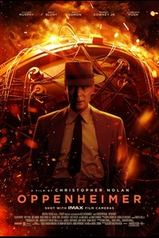

| 2 |

|
Oppenheimer |
Oppenheimer is a 2023 biographical film written and directed by Christopher Nolan and starring Cillian Murphy as J. Robert Oppenheimer, the American theoretical physicist credited with being the "father of the atomic bomb" for his role in the Manhattan Project—the World War II undertaking that developed the first nuclear weapons. Based on the 2005 biography American Prometheus by Kai Bird and Martin J. Sherwin, the film chronicles the career of Oppenheimer, with the story predominantly focusing on his studies, his direction of the Manhattan Project during World War II, and his eventual fall from grace due to his 1954 security hearing. In addition to Murphy, the film stars Emily Blunt as Oppenheimer's wife "Kitty", Matt Damon as head of the Manhattan Project Leslie Groves, Robert Downey Jr. as U.S. Atomic Energy Commission member Lewis Strauss, and Florence Pugh as Oppenheimer's communist lover Jean Tatlock. The ensemble supporting cast includes Josh Hartnett, Casey Affleck, Rami Malek, and Kenneth Branagh. |
Trailer
Details
|